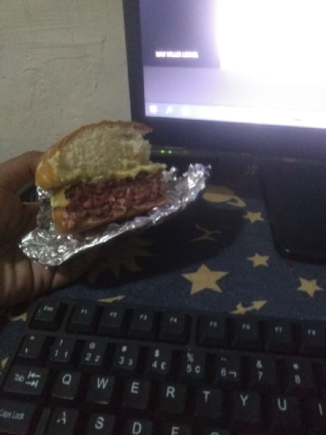
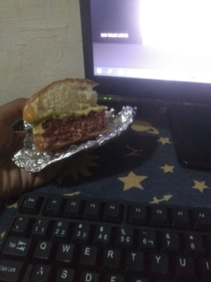
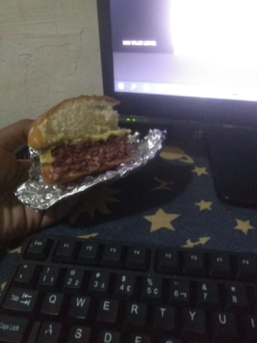

Mais gosto de pedir comida as vezes, essa ultima foto foi um Xburguer que eu estava comendo na aula hahahaha\😋🤩.
Inicio© Fabricio Oliveira De Carvalho♉

Mais gosto de pedir comida as vezes, essa ultima foto foi um Xburguer que eu estava comendo na aula hahahaha\😋🤩.
Inicio